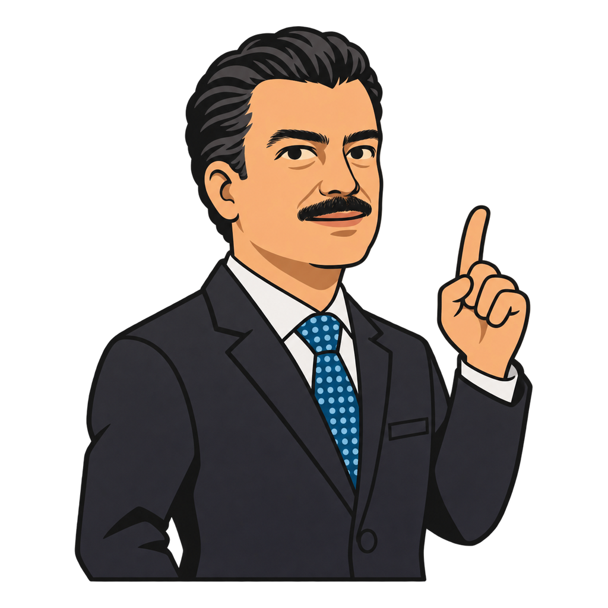

Hoja 1 de 4 · Imprime a doble cara, volteando por el lado largo, a tamaño real (100 %). Recorta por las líneas.
AlejandroInformática

«Sin prisa. Ya tengo un plan B... y un plan C.»
FIN DE LA GESTIÓN
BeatrizInformática

«Dicen que doy miedo. Yo solo exijo que quede bien hecho.»
FIN DE LA GESTIÓN
FernandoInformática

«¿Junta aburrida? Dame cinco minutos y la vuelvo anécdota.»
FIN DE LA GESTIÓN
JanoeCoordinador de Sistemas

«Dame un problema y te devuelvo un plan.»
FIN DE LA GESTIÓN
MónicaEx directora de la Unidad
«Ah, y recuerda: la entrega es el viernes. Siempre es el viernes.»
FIN DE LA GESTIÓN
NayeliInformática
«¡Tú puedes dirigir esta unidad! ¡Yo traigo los pompones!»
FIN DE LA GESTIÓN
Sergio OlivaresInformática

«Yo encargué este juego. Tiré el dado y salió un crítico.»
FIN DE LA GESTIÓN
SoniaCoordinadora de Informática

«Aquí nadie sale enojado. Es mi regla.»
FIN DE LA GESTIÓN
VíctorInformática

«Una sonrisa a tiempo vale más que mil memorándums.»
FIN DE LA GESTIÓN